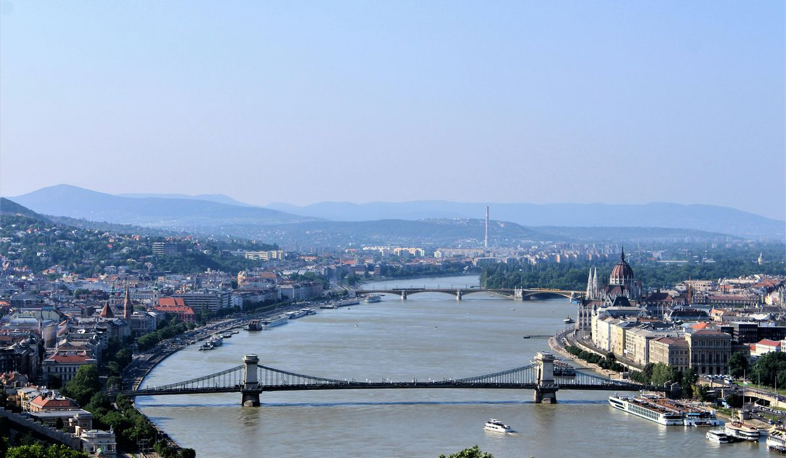
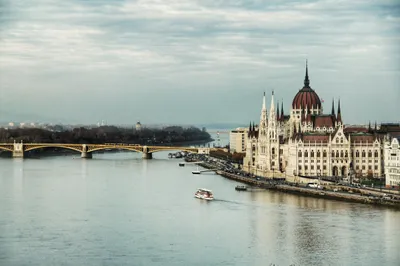
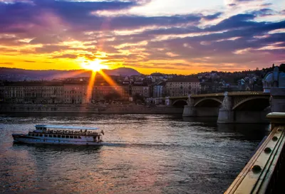

Budapest: Un paseo por el Danubio y su historia

Budapest, la capital de Hungría, es una de las ciudades más fascinantes de Europa. Conocida por su impresionante arquitectura, su vida nocturna vibrante y su historia fascinante, esta ciudad se divide en dos partes: Buda y Pest, separadas por el río Danubio. Fue precisamente su historia encandilante la que me motivó a descubrir esta ciudad.
La historia de Budapest
Budapest tiene una rica historia que se remonta a tiempos romanos. La ciudad se formó por la fusión de Buda y Pest en 1873, y desde entonces ha sido testigo de importantes eventos históricos, como la Revolución Húngara de 1956. Hoy en día, la ciudad conserva muchos vestigios de su pasado, como el Castillo de Buda y los baños termales que datan de la época otomana.
Qué hacer en Budapest
Hay mucho que hacer en Budapest, desde recorrer el histórico Castillo de Buda y la Iglesia de Matías, hasta disfrutar de las vistas desde el Parlamento húngaro. No te pierdas un paseo en barco por el Danubio al atardecer, una de las mejores maneras de admirar la ciudad desde el agua. Además, Budapest es famosa por sus termas, como las Baños Széchenyi, donde puedes relajarte mientras disfrutas de las aguas termales.
Consejos para viajeros
- Transporte: La red de transporte público de Budapest es eficiente y fácil de usar. El metro es una excelente opción para moverse rápidamente por la ciudad.
- Alojamiento: Budapest tiene una variedad de opciones, desde hostales económicos hasta hoteles de lujo. Recomiendo buscar alojamiento cerca de la estación de metro para mayor comodidad.
- Comida: No dejes de probar el goulash, un guiso húngaro tradicional, y los pasteles de crema en una de las muchas cafeterías históricas de la ciudad.

